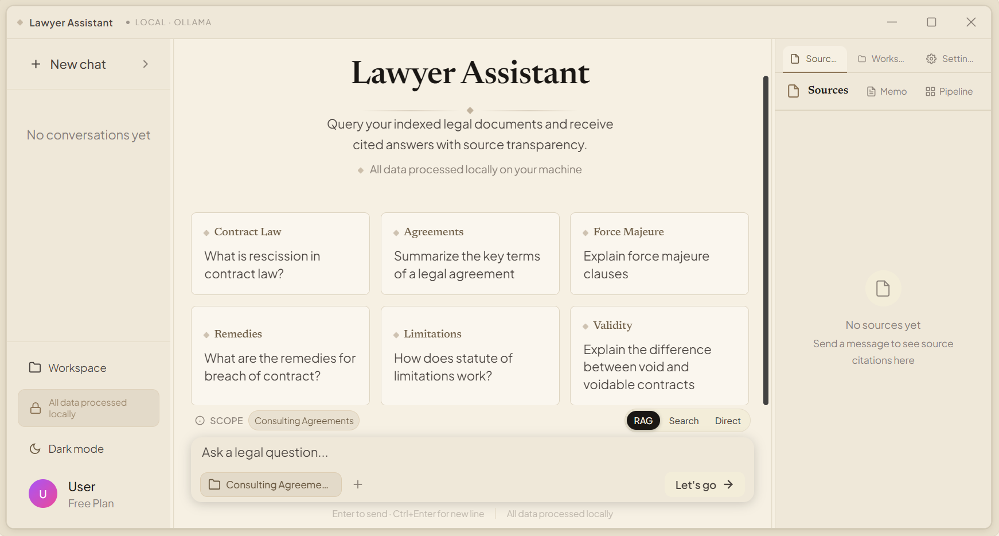
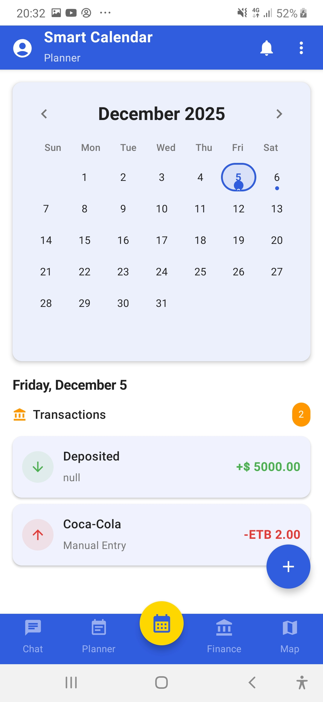
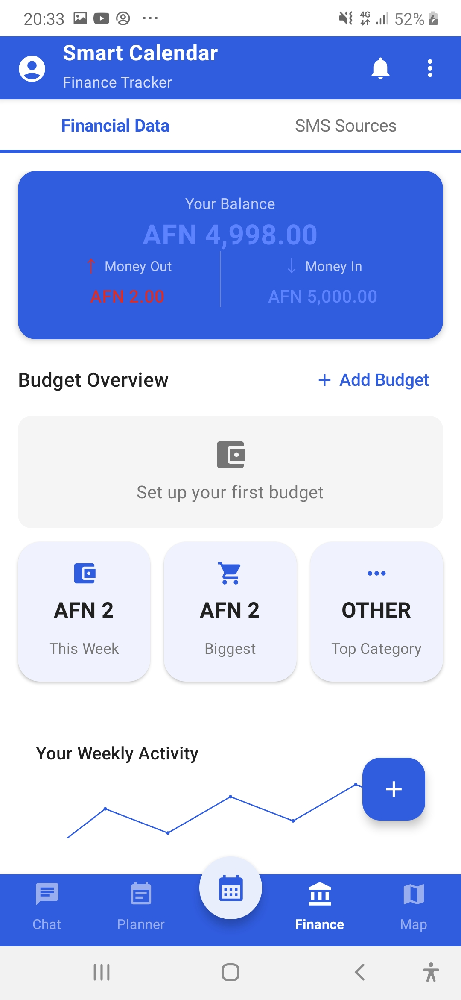
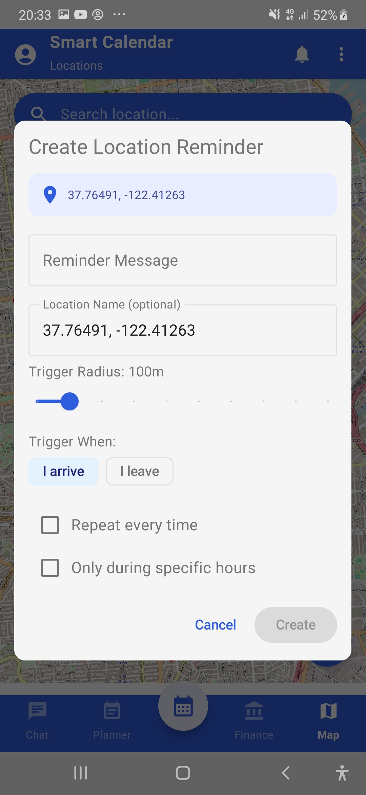
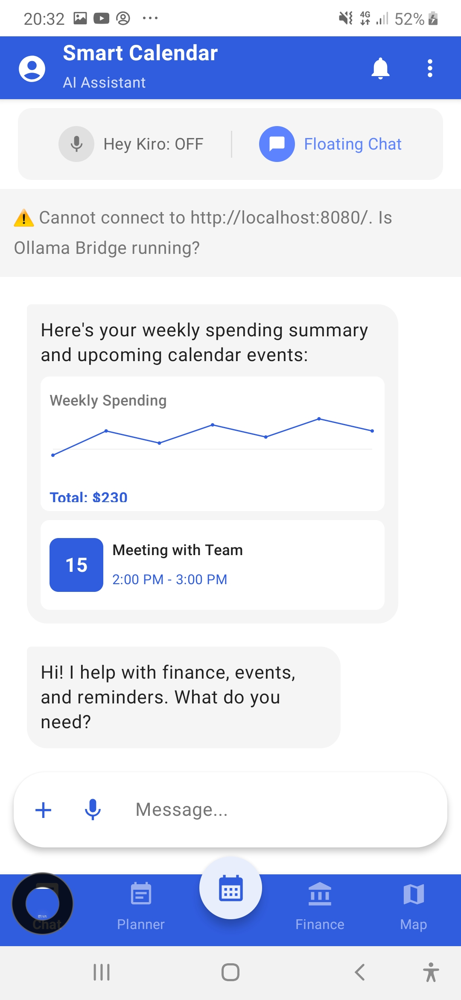

I design, build, and ship AI that runs on the hardware people own — offline, private, and in the languages the industry ignores.
I'm an AI engineer and consultant working across the full AI lifecycle — evaluating model architectures, benchmarking performance, building production knowledge systems, and deploying private AI infrastructure.
What I ship is concrete: a legal-research app that answers from a firm's own documents with inline citations and zero cloud traffic; an Android assistant that turns voice and SMS into calendar and expense entries on-device; and an inference engine that turns any laptop into a multilingual AI workstation without a terminal. I've optimized inference across llama.cpp, GGUF, Ollama, and vLLM, and I design for the constraint most AI work ignores — the hardware and languages the user actually has.
Before AI, I founded and led a peer-to-peer trading operation — solving real problems under real constraints. I bring that standard to every system I build: evaluate the trade-offs honestly, choose the architecture deliberately, and ship something that survives contact with production.
Architecture evaluation, RAG systems, agentic workflows, and knowledge management — designed, built, and deployed end-to-end.
Business-grade RAG built on multiple chunking, retrieval, reranking, and knowledge-grounding strategies — ChromaDB, FAISS, and vector search at scale.
On-premise, sovereign AI deployment with inference optimized across llama.cpp, GGUF, Ollama, and vLLM — data never leaves your environment.
Every system benchmarked on accuracy, latency, scalability, resource utilization, and operational fit. "Works in a demo" is not a standard I ship to.
Hands-on AI engineering across the complete lifecycle — model research and benchmarking, retrieval and agentic systems, private infrastructure, and the products that run on it.
Shipped production LLM applications end-to-end — model fine-tuning, quantization, and CPU-efficient inference on llama.cpp, Ollama, and raw PyTorch, built for the hardware most users actually own.
Architected retrieval and agentic systems on LangChain and LangGraph — hybrid BM25 + semantic search, reranking, and citation-grounded answers that can be verified, not just trusted.
Delivered cross-platform AI products for non-technical users — PySide6 desktop applications and Kotlin/Android assistants with zero-CLI, on-device experiences.
Built AI for underrepresented languages — Pashto, Dari, Persian, Urdu — with custom glossaries, context-aware translation, and evaluation that goes beyond English benchmarks.
Designed offline-first systems where data never leaves the device — zero telemetry, on-prem deployment, and compliance alignment for legal and regulated industries.
Own search and AI discoverability end-to-end for every product I ship — technical SEO, structured data, and content engineered to rank, and to be cited, by search, generative, and answer engines.
Hard problems deserve boring, reliable solutions. I pair deep technical work with interfaces that non-technical users can actually operate — no CLI required.
Tech: PySide6, modular plugin architecture
Most AI ignores most of the world's languages. I build context-aware pipelines for Pashto, Dari, Persian, and Urdu — with glossaries, culture, and evaluation that go beyond English.
Tech: LangChain, Mistral, GGUF
I optimize for the machines people actually own — quantization, memory efficiency, and inference tuning that turn ordinary laptops into capable AI workstations.
Tech: llama.cpp, quantization, GGUF
Data protection is designed in from the start — offline-first processing, zero telemetry, and compliance alignment for legal and regulated industries.
Tech: Local inference, GDPR alignment

Private AI legal research for your own documents — ask in plain English, get cited answers, 100% on your machine.
Every claim grounded in retrieved passages with inline source links
Custom rules flag, rate, and explain violations in any document
Semantic + keyword (BM25) retrieval fused and re-ranked
Windows, macOS & Linux — no account, no cloud, no telemetry
Benchmark figures from the project's own evaluation suite — backend/benchmark in the GitHub repo.




The voice-first AI personal assistant that replaces 5 apps — calendar, reminders, finance tracking, location alerts, and tasks in one Android app.
"Kiro" wake word + voice commands for hands-free use
Auto-parses SMS transactions into your expense log
Geofencing alerts that fire where you actually are
Works offline with privacy-first local intelligence
Transform any laptop into a secure, customizable, multilingual AI workstation.
Fully graphical interface with drag & drop model loading
Monitor RAM, VRAM, and active threads
Build custom chat UIs, translators, document processors
Ready for Pashto, Dari, Persian educational pipelines
Prompts and files never leave the machine — stated in the open-source repo docs
Runs on modest hardware; 8GB recommended (repo system requirements)
Cross-platform desktop app, including Apple Silicon
CUDA on Windows/Linux, Metal on macOS
Problem: AI assistants are too heavy for everyday phones
Solution: Lightweight, mobile-optimized AI assistant built in Kotlin for on-device use
Problem: Frameworks hide how transformers actually work
Solution: GPT-style LLM built from scratch in raw PyTorch — custom BPE tokenizer, decoder-only transformer, SwiGLU ablation, two-stage fine-tuning
Focus: Open-source Python toolkit (MIT) for local LLM workflows and model tooling
Problem: Internet dependence, limited support for underrepresented languages
Solution: Hybrid Mistral + llama.cpp architecture for offline Persian/Urdu dialogue
Part 2 — Beyond building software, I own the online presence of every product I ship. I handle end-to-end SEO (search engine optimization), GEO (generative engine optimization), and AEO (answer engine optimization): technical SEO, structured data & JSON-LD, FAQ schemas, sitemaps, canonical URLs, Open Graph/Twitter cards, content strategy, and making each site get discovered — and cited — by search engines and AI assistants.
SEO · GEO · AEO: Product site with model downloads, docs, and local AI content targeting high-intent search queries.
SEO · GEO · AEO: Daily-updated model discovery site with expert guides, FAQ content, and structured data built to rank for model queries.
SEO · GEO · AEO: Enterprise AI infrastructure site — private RAG, agents, and sovereign AI positioning for regulated industries.
SEO · GEO · AEO: FAQ-driven content, download pages, and citation-friendly product copy that AI assistants can quote.
SEO · GEO · AEO: Person & FAQPage structured data, canonical URLs, sitemap, and blog posts optimized to rank and get cited by AI engines.
Your data never leaves your device — no telemetry, no third-party processing, no ambiguity about who sees client material. Privacy is designed in, not added as a policy.
Built for the machines you have, not the ones a vendor wishes you'd buy — quantized models, efficient CPU inference, and memory tuning that keep costs low and answers fast.
Most of the world's languages are underserved by mainstream AI. I build for Pashto, Dari, Persian, and Urdu with the same rigor as English — glossaries, context, and evaluation included.
Field notes from building local AI: RAG systems, GGUF tooling, private deployment, and multilingual NLP for languages the industry ignores — all on the dedicated blog page.
Read the Blog